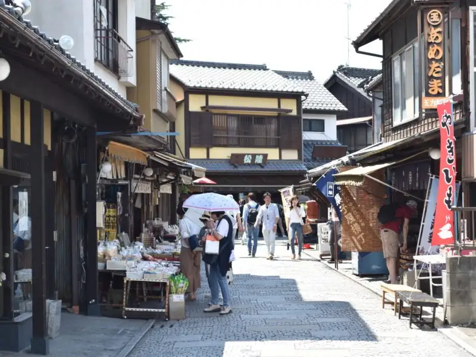
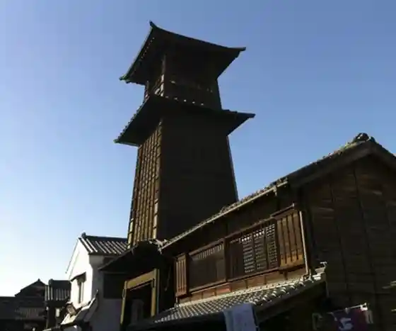
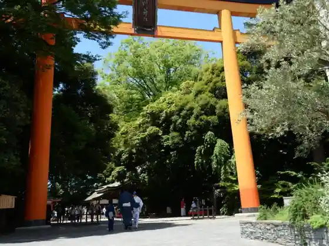
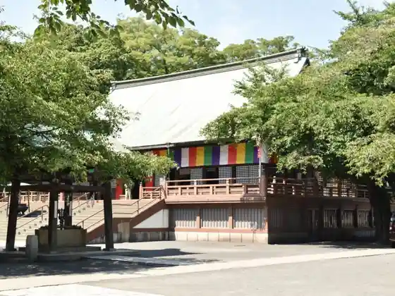
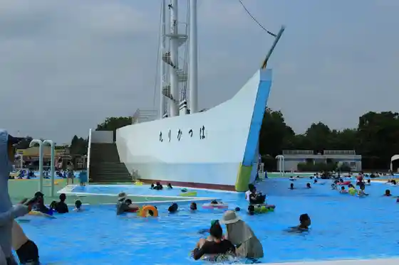

Japan / Saitama / Kawagoe
Kawagoe, Saitama
Kawagoe · Saitama
Kawagoe
Highlighted on the Saitama map.

Sights
Kashiya Alley
Kawagoe, Saitama · 049-222-5556 · Official / source link
Toki no Kane
Kawagoe, Saitama · 049-222-5556 · Official / source link

Kawagoe Hikawa Shrine
Kawagoe, Saitama · 049-224-0589 · Official / source link

Kawagoe Taishi Kita In
Kawagoe, Saitama · 049-222-5556 · Official / source link

Hot Staff Kawagoe Park (Kawagoe Suijo Park)
Kawagoe, Saitama · 049-241-2241 · Official / source link

Kura Tsukuri no Streetscape
Kawagoe, Saitama · 049-222-5556 · Official / source link
Kita In no Gohyaku Rakan
Kawagoe, Saitama · 049-222-0859 · Official / source link
Kawagoe Hon Kawagoe Eki Tourist Information
Kawagoe, Saitama · Official / source link
Matsumoto Shoyu Shoten
Kawagoe, Saitama · 049-222-0432 · Official / source link
Kyu Yamazaki Iebetsu Tei
Kawagoe, Saitama · 049-224-5940 · Official / source link